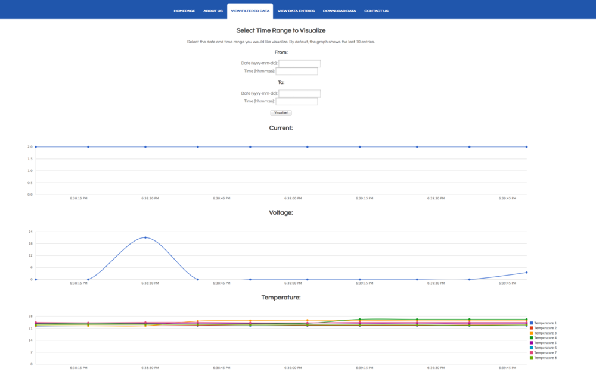

The goal of this project, which was done as part of Stanford’s Engineers for a Sustainable World (ESW) chapter, was to create a vaccine refrigeration remote monitoring system meeting specifications given to us by PATH, a non-profit global healthcare organization. The system needed to be capable of collecting data about the refrigeration system’s current and voltage, as well as of making 8 separate temperature measurements. The system needed to be capable of both locally recording the data it collects and transmitting the data such that it can be remotely viewed and downloaded in a format readable by Excel.
Project Aims:
- Develop a remote monitoring system for vaccine refrigerators
- Create an device to read temperature, voltage, and current data from the refrigerators and transmit the data
- Create a web application to receive and process the data
- Connect the device and web application to make data available remotely
- Develop a way to view the data online
- Develop a way to download the data
- Test the monitoring system and fix as needed
- Write a clear user guide to allow others to use our system
- Deliver the monitoring system to PATH
Our final product consists of an Arduino platform capable of measuring temperature, voltage, and current data from the refrigerators and both saving this data on an SD card and transmitting this data to the database of a website. The website gives PATH users who know the general password the ability to view data visualizations and raw data and to download data over any desired time range in a .csv format.
The website was built using Ruby and hosted on Heroku. The application receives data via Twilio and uses Chartkick for data visualization. The website may be accessed with password Stanford.

View the website
Download the report
Github repo
Additional information
This was a project completed by Stanford University’s Engineers for a Sustainable World (ESW) chapter, in partnership with the global health nonprofit, PATH. The team consisted of six Stanford students with computer science or electrical engineering backgrounds. My contributions included some Raspberry Pi work and the bulk of the web development and data visualization work.
January - June 2015